import numpy as np
import pandas as pd
import matplotlib.pyplot as plt
import seaborn as sns
%matplotlib inlineClustering
Content
- Introduction
- What is Clustering
- Why Clustering
- Types of Clustering Methods/ Algorithms
Introduction
It is basically a type of unsupervised learning method. An unsupervised learning method is a method in which we draw references from datasets consisting of input data without labeled responses. Generally, it is used as a process to find meaningful structure, explanatory underlying processes, generative features, and groupings inherent in a set of examples.
What is Clustering
Clustering is the task of dividing the population or data points into a number of groups such that data points in the same groups are more similar to other data points in the same group and dissimilar to the data points in other groups. It is basically a collection of objects on the basis of similarity and dissimilarity between them.
Clustering is a type of unsupervised machine learning technique where the goal is to group similar data points together based on certain features or characteristics. The objective of clustering is to find natural groupings or patterns within a dataset without the need for labeled output.
Why Clustering
When working with large datasets, an efficient way to analyze them is to first divide the data into logical groupings, aka clusters. This way, you could extract value from a large set of unstructured data. It helps you to glance through the data to pull out some patterns or structures before going deeper into analyzing the data for specific findings
Clustering is very much important as it determines the intrinsic grouping among the unlabelled data present. There are no criteria for good clustering. It depends on the user, and what criteria they may use which satisfy their need
-
Pattern Recognition:
Clustering helps identify natural groupings or patterns within data that may not be immediately apparent. It allows for the discovery of inherent structures and relationships.
-
Data Exploration and Understanding:
Insight into Data Distribution: Clustering provides insights into how data points are distributed and grouped in a dataset. This is valuable for exploratory data analysis and understanding the underlying structure.
- Segmentation and Customer Profiling:
In business and marketing, clustering is often used for customer segmentation. It helps identify groups of customers with similar behavior, preferences, or purchasing patterns, enabling targeted marketing strategies.
-
Anomaly Detection:
Identification of Outliers: Clustering can be used to identify unusual patterns or outliers in a dataset. Data points that do not conform to the patterns of their assigned clusters may be considered anomalies.
Types of Clustering Methods/ Algorithms
| Clustering Methods/ Algorithms | Method | Description | Advantages | Disadvantages |
|---|---|---|---|---|
| K-Means Clustering | Partitioning | Divides the dataset into a specified number (k) of clusters. | Simple and computationally efficient. | Sensitive to initial cluster centroids. |
| Hierarchical Clustering | Agglomerative (bottom-up) or divisive (top-down) | Builds a tree-like hierarchy of clusters | Provides a hierarchy of clusters, visualized using dendrogram. | Computationally more intensive. |
| DBSCAN | Density-based | Forms clusters based on the density of data points | Can discover clusters of arbitrary shapes and handles noise well | Sensitive to parameter settings |
| Mean Shift | Centroid-based | Iteratively shifts centroids towards the mode of the data distribution | Can find irregularly shaped clusters and adapt to varying densities | Computationally expensive |
| Gaussian Mixture Model (GMM) | Probabilistic | the data points are generated from a mixture of several Gaussian distributions | Can model complex data distributions and provide probabilistic cluster assignments | Sensitive to the initial parameters. |
| Mean Shift | Centroid-based | Iteratively shifts centroids towards the mode of the data distribution. The resulting clusters are regions of high data density | Can find irregularly shaped clusters and adapt to varying densities | Computationally expensive |
| Agglomerative Clustering | Hierarchical, bottom-up | Starts with individual data points as separate clusters and iteratively merges the closest clusters until a stopping criterion is met | Can handle different shapes and sizes of clusters | Computationally more intensive |
df = pd.read_csv('IMDB.csv')df.head()| Name | Year | Episodes | Type | Rating | Image-src | Description | Name-href | |
|---|---|---|---|---|---|---|---|---|
| 0 | 1. Breaking Bad | 2008–2013 | 62 eps | TV-MA | 9.5 | https://m.media-amazon.com/images/M/MV5BYmQ4YW... | A chemistry teacher diagnosed with inoperable ... | https://www.imdb.com/title/tt0903747/?ref_=cht... |
| 1 | 2. Planet Earth II | 2016 | 6 eps | TV-G | 9.5 | https://m.media-amazon.com/images/M/MV5BMGZmYm... | David Attenborough returns with a new wildlife... | https://www.imdb.com/title/tt5491994/?ref_=cht... |
| 2 | 3. Planet Earth | 2006 | 11 eps | TV-PG | 9.4 | https://m.media-amazon.com/images/M/MV5BMzMyYj... | A documentary series on the wildlife found on ... | https://www.imdb.com/title/tt0795176/?ref_=cht... |
| 3 | 4. Band of Brothers | 2001 | 10 eps | TV-MA | 9.4 | https://m.media-amazon.com/images/M/MV5BMTI3OD... | The story of Easy Company of the U.S. Army 101... | https://www.imdb.com/title/tt0185906/?ref_=cht... |
| 4 | 5. Chernobyl | 2019 | 5 eps | TV-MA | 9.4 | https://m.media-amazon.com/images/M/MV5BNTdkN2... | In April 1986, an explosion at the Chernobyl n... | https://www.imdb.com/title/tt7366338/?ref_=cht... |
df.columnsIndex(['Name', 'Year', 'Episodes', 'Type', 'Rating', 'Image-src',
'Description', 'Name-href'],
dtype='object')df['Year']0 2008–2013
1 2016
2 2006
3 2001
4 2019
...
245 2009–
246 2002–2015
247 2009–2013
248 2014–2015
249 2017–2019
Name: Year, Length: 250, dtype: objectdf.dropna(inplace=True)df.isnull().sum()Name 0
Year 0
Episodes 0
Type 0
Rating 0
Image-src 0
Description 0
Name-href 0
dtype: int64plt.figure(figsize=(10, 6))
sns.countplot(x='Type', data=df, palette='viridis')
plt.title('Distribution of TV Shows by Genres')
plt.show()C:\Users\user\AppData\Local\Programs\Python\Python311\Lib\site-packages\seaborn\_oldcore.py:1498: FutureWarning:
is_categorical_dtype is deprecated and will be removed in a future version. Use isinstance(dtype, CategoricalDtype) instead
C:\Users\user\AppData\Local\Programs\Python\Python311\Lib\site-packages\seaborn\_oldcore.py:1498: FutureWarning:
is_categorical_dtype is deprecated and will be removed in a future version. Use isinstance(dtype, CategoricalDtype) instead
C:\Users\user\AppData\Local\Programs\Python\Python311\Lib\site-packages\seaborn\_oldcore.py:1498: FutureWarning:
is_categorical_dtype is deprecated and will be removed in a future version. Use isinstance(dtype, CategoricalDtype) instead
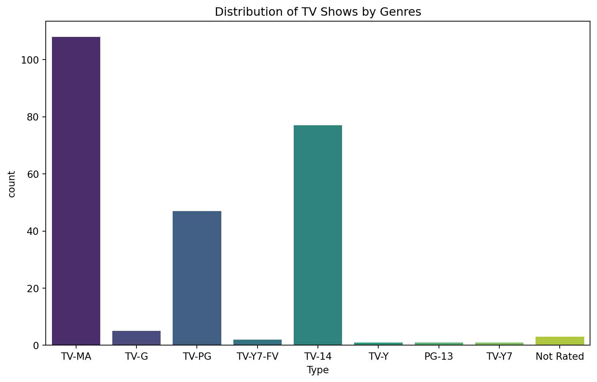
top_rated_shows = df.sort_values(by='Rating', ascending=False).head(10)
plt.figure(figsize=(12, 6))
sns.barplot(x='Rating', y='Name', data=top_rated_shows, palette='Blues_r')
plt.title('Top-rated TV Shows and Their IMDb Ratings')
plt.xlabel('IMDb Rating')
plt.ylabel('TV Show Name')
plt.show()C:\Users\user\AppData\Local\Programs\Python\Python311\Lib\site-packages\seaborn\_oldcore.py:1498: FutureWarning:
is_categorical_dtype is deprecated and will be removed in a future version. Use isinstance(dtype, CategoricalDtype) instead
C:\Users\user\AppData\Local\Programs\Python\Python311\Lib\site-packages\seaborn\_oldcore.py:1498: FutureWarning:
is_categorical_dtype is deprecated and will be removed in a future version. Use isinstance(dtype, CategoricalDtype) instead
C:\Users\user\AppData\Local\Programs\Python\Python311\Lib\site-packages\seaborn\_oldcore.py:1498: FutureWarning:
is_categorical_dtype is deprecated and will be removed in a future version. Use isinstance(dtype, CategoricalDtype) instead
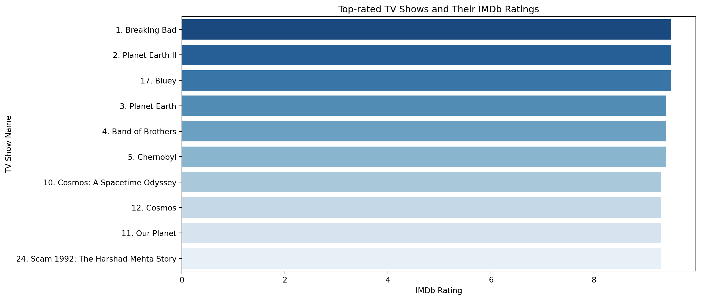
plt.figure(figsize=(12, 6))
sns.swarmplot(x='Type', y='Rating', data=df, palette='dark', size=8)
plt.title('IMDb Ratings Distribution by TV Show Type')
plt.xlabel('TV Show Type')
plt.ylabel('IMDb Rating')
plt.show()C:\Users\user\AppData\Local\Programs\Python\Python311\Lib\site-packages\seaborn\_oldcore.py:1498: FutureWarning:
is_categorical_dtype is deprecated and will be removed in a future version. Use isinstance(dtype, CategoricalDtype) instead
C:\Users\user\AppData\Local\Programs\Python\Python311\Lib\site-packages\seaborn\_oldcore.py:1498: FutureWarning:
is_categorical_dtype is deprecated and will be removed in a future version. Use isinstance(dtype, CategoricalDtype) instead
C:\Users\user\AppData\Local\Programs\Python\Python311\Lib\site-packages\seaborn\_oldcore.py:1498: FutureWarning:
is_categorical_dtype is deprecated and will be removed in a future version. Use isinstance(dtype, CategoricalDtype) instead
C:\Users\user\AppData\Local\Programs\Python\Python311\Lib\site-packages\seaborn\_oldcore.py:1498: FutureWarning:
is_categorical_dtype is deprecated and will be removed in a future version. Use isinstance(dtype, CategoricalDtype) instead
C:\Users\user\AppData\Local\Programs\Python\Python311\Lib\site-packages\seaborn\_oldcore.py:1498: FutureWarning:
is_categorical_dtype is deprecated and will be removed in a future version. Use isinstance(dtype, CategoricalDtype) instead
C:\Users\user\AppData\Local\Programs\Python\Python311\Lib\site-packages\seaborn\_oldcore.py:1498: FutureWarning:
is_categorical_dtype is deprecated and will be removed in a future version. Use isinstance(dtype, CategoricalDtype) instead
C:\Users\user\AppData\Local\Programs\Python\Python311\Lib\site-packages\seaborn\_oldcore.py:1498: FutureWarning:
is_categorical_dtype is deprecated and will be removed in a future version. Use isinstance(dtype, CategoricalDtype) instead
C:\Users\user\AppData\Local\Temp\ipykernel_5676\3663582833.py:2: FutureWarning:
Passing `palette` without assigning `hue` is deprecated.
C:\Users\user\AppData\Local\Programs\Python\Python311\Lib\site-packages\seaborn\_oldcore.py:1119: FutureWarning:
use_inf_as_na option is deprecated and will be removed in a future version. Convert inf values to NaN before operating instead.
C:\Users\user\AppData\Local\Programs\Python\Python311\Lib\site-packages\seaborn\_oldcore.py:1119: FutureWarning:
use_inf_as_na option is deprecated and will be removed in a future version. Convert inf values to NaN before operating instead.
C:\Users\user\AppData\Local\Programs\Python\Python311\Lib\site-packages\seaborn\categorical.py:3544: UserWarning:
50.0% of the points cannot be placed; you may want to decrease the size of the markers or use stripplot.
C:\Users\user\AppData\Local\Programs\Python\Python311\Lib\site-packages\seaborn\categorical.py:3544: UserWarning:
23.4% of the points cannot be placed; you may want to decrease the size of the markers or use stripplot.
C:\Users\user\AppData\Local\Programs\Python\Python311\Lib\site-packages\seaborn\categorical.py:3544: UserWarning:
40.3% of the points cannot be placed; you may want to decrease the size of the markers or use stripplot.
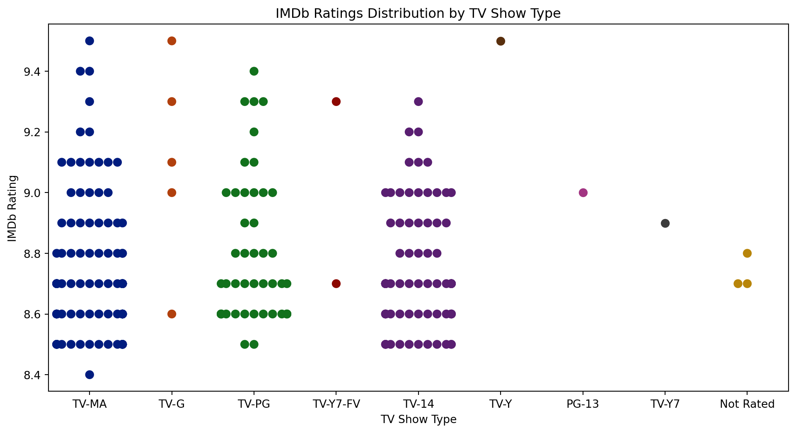
sns.pairplot(df[['Year', 'Episodes', 'Rating', 'Type']], hue='Type', palette='Set1')
plt.suptitle('Pair Plot of TV Show Data with Type Hue', y=1.02)
plt.show()C:\Users\user\AppData\Local\Programs\Python\Python311\Lib\site-packages\seaborn\_oldcore.py:1498: FutureWarning:
is_categorical_dtype is deprecated and will be removed in a future version. Use isinstance(dtype, CategoricalDtype) instead
C:\Users\user\AppData\Local\Programs\Python\Python311\Lib\site-packages\seaborn\_oldcore.py:1498: FutureWarning:
is_categorical_dtype is deprecated and will be removed in a future version. Use isinstance(dtype, CategoricalDtype) instead
C:\Users\user\AppData\Local\Programs\Python\Python311\Lib\site-packages\seaborn\_oldcore.py:1498: FutureWarning:
is_categorical_dtype is deprecated and will be removed in a future version. Use isinstance(dtype, CategoricalDtype) instead
C:\Users\user\AppData\Local\Programs\Python\Python311\Lib\site-packages\seaborn\_oldcore.py:1498: FutureWarning:
is_categorical_dtype is deprecated and will be removed in a future version. Use isinstance(dtype, CategoricalDtype) instead
C:\Users\user\AppData\Local\Programs\Python\Python311\Lib\site-packages\seaborn\_oldcore.py:1498: FutureWarning:
is_categorical_dtype is deprecated and will be removed in a future version. Use isinstance(dtype, CategoricalDtype) instead
C:\Users\user\AppData\Local\Programs\Python\Python311\Lib\site-packages\seaborn\_oldcore.py:1498: FutureWarning:
is_categorical_dtype is deprecated and will be removed in a future version. Use isinstance(dtype, CategoricalDtype) instead
C:\Users\user\AppData\Local\Programs\Python\Python311\Lib\site-packages\seaborn\_oldcore.py:1498: FutureWarning:
is_categorical_dtype is deprecated and will be removed in a future version. Use isinstance(dtype, CategoricalDtype) instead
C:\Users\user\AppData\Local\Programs\Python\Python311\Lib\site-packages\seaborn\_oldcore.py:1498: FutureWarning:
is_categorical_dtype is deprecated and will be removed in a future version. Use isinstance(dtype, CategoricalDtype) instead
C:\Users\user\AppData\Local\Programs\Python\Python311\Lib\site-packages\seaborn\_oldcore.py:1119: FutureWarning:
use_inf_as_na option is deprecated and will be removed in a future version. Convert inf values to NaN before operating instead.
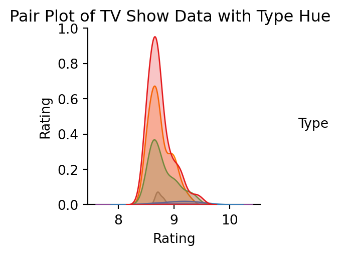
fig, ax = plt.subplots(1, figsize = (30,8))
ax = sns.scatterplot(x='Year', y='Rating', data=df, hue='Type', palette='Set1', alpha=0.7)
ax.grid()
fig.autofmt_xdate()
plt.xticks(rotation = 90, ha = 'right',
fontsize = 10)
plt.xlim(0, 178)
plt.title('Correlation between Release Year and IMDb Ratings')
plt.xlabel('Release Year')
plt.ylabel('IMDb Rating')
plt.legend(title='TV Show Type')
plt.show()C:\Users\user\AppData\Local\Programs\Python\Python311\Lib\site-packages\seaborn\_oldcore.py:1498: FutureWarning:
is_categorical_dtype is deprecated and will be removed in a future version. Use isinstance(dtype, CategoricalDtype) instead
C:\Users\user\AppData\Local\Programs\Python\Python311\Lib\site-packages\seaborn\_oldcore.py:1498: FutureWarning:
is_categorical_dtype is deprecated and will be removed in a future version. Use isinstance(dtype, CategoricalDtype) instead
C:\Users\user\AppData\Local\Programs\Python\Python311\Lib\site-packages\seaborn\_oldcore.py:1498: FutureWarning:
is_categorical_dtype is deprecated and will be removed in a future version. Use isinstance(dtype, CategoricalDtype) instead
C:\Users\user\AppData\Local\Programs\Python\Python311\Lib\site-packages\seaborn\_oldcore.py:1498: FutureWarning:
is_categorical_dtype is deprecated and will be removed in a future version. Use isinstance(dtype, CategoricalDtype) instead
C:\Users\user\AppData\Local\Programs\Python\Python311\Lib\site-packages\seaborn\_oldcore.py:1498: FutureWarning:
is_categorical_dtype is deprecated and will be removed in a future version. Use isinstance(dtype, CategoricalDtype) instead
C:\Users\user\AppData\Local\Programs\Python\Python311\Lib\site-packages\seaborn\_oldcore.py:1498: FutureWarning:
is_categorical_dtype is deprecated and will be removed in a future version. Use isinstance(dtype, CategoricalDtype) instead
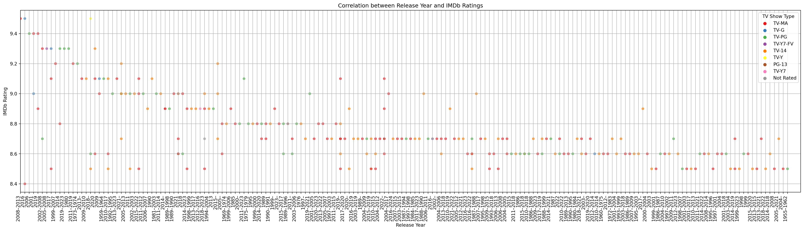
from wordcloud import WordCloud
import matplotlib.pyplot as plt
top_rated_descriptions = " ".join(df['Description'])
wordcloud = WordCloud(width=800, height=400, background_color='white').generate(top_rated_descriptions)
plt.figure(figsize=(10, 5))
plt.imshow(wordcloud, interpolation='bilinear')
plt.axis('off')
plt.title('Word Cloud of Top-rated TV Show Descriptions')
plt.show()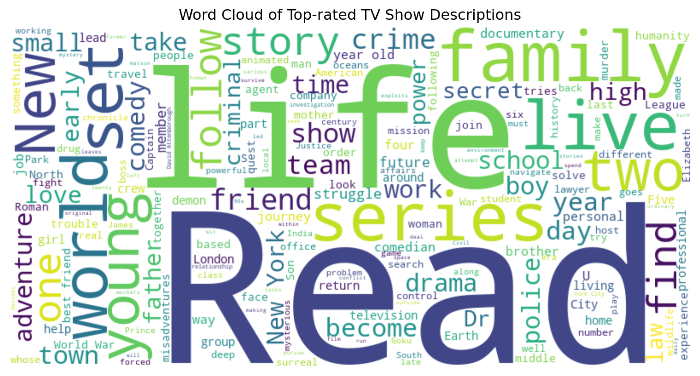
numerical_features = df[['Year', 'Episodes', 'Rating']]df['Year'] = df['Year'].astype(str)
df.loc[:, 'Year'] = df['Year'].str.split('–').str[0].astype(int)df.loc[:, 'Episodes'] = pd.to_numeric(df['Episodes'].str.extract('(\d+)')[0], errors='coerce')from sklearn.cluster import KMeans
from sklearn.preprocessing import StandardScaler
features = df[['Year', 'Episodes', 'Rating']]
features = features.dropna()
scaler = StandardScaler()
features_scaled = scaler.fit_transform(features)
num_clusters = 3
kmeans = KMeans(n_clusters=num_clusters, random_state=42)
df['Cluster'] = kmeans.fit_predict(features_scaled)
print(df[['Name', 'Cluster']])
plt.scatter(features_scaled[:, 0], features_scaled[:, 1], c=df['Cluster'], cmap='viridis')
plt.xlabel('Year')
plt.ylabel('Episodes')
plt.title('K-Means Clustering')
plt.show()C:\Users\user\AppData\Local\Programs\Python\Python311\Lib\site-packages\sklearn\cluster\_kmeans.py:1412: FutureWarning:
The default value of `n_init` will change from 10 to 'auto' in 1.4. Set the value of `n_init` explicitly to suppress the warning
Name Cluster
0 1. Breaking Bad 1
1 2. Planet Earth II 1
2 3. Planet Earth 1
3 4. Band of Brothers 1
4 5. Chernobyl 1
.. ... ...
240 241. Gintama 2
241 242. Queer Eye 0
242 243. The Angry Video Game Nerd 2
243 244. Alfred Hitchcock Presents 2
244 245. The Night Of 0
[245 rows x 2 columns]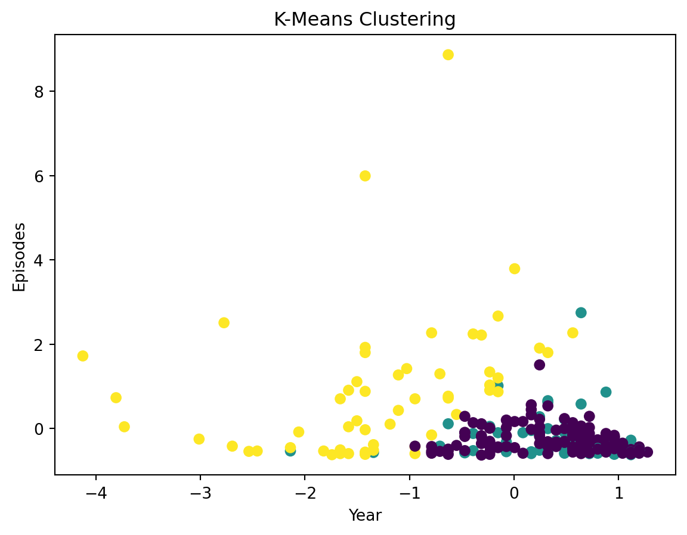
X = df[['Year', 'Episodes', 'Rating']].dropna()
wcss = []
for i in range(1, 11):
kmeans = KMeans(n_clusters=i, init='k-means++', random_state=0)
kmeans.fit(X)
wcss.append(kmeans.inertia_)
plt.plot(range(1, 11), wcss, marker='o')
plt.title('The Elbow Method')
plt.xlabel('Number of Clusters')
plt.ylabel('WCSS')
plt.show()C:\Users\user\AppData\Local\Programs\Python\Python311\Lib\site-packages\sklearn\cluster\_kmeans.py:1412: FutureWarning:
The default value of `n_init` will change from 10 to 'auto' in 1.4. Set the value of `n_init` explicitly to suppress the warning
C:\Users\user\AppData\Local\Programs\Python\Python311\Lib\site-packages\sklearn\cluster\_kmeans.py:1412: FutureWarning:
The default value of `n_init` will change from 10 to 'auto' in 1.4. Set the value of `n_init` explicitly to suppress the warning
C:\Users\user\AppData\Local\Programs\Python\Python311\Lib\site-packages\sklearn\cluster\_kmeans.py:1412: FutureWarning:
The default value of `n_init` will change from 10 to 'auto' in 1.4. Set the value of `n_init` explicitly to suppress the warning
C:\Users\user\AppData\Local\Programs\Python\Python311\Lib\site-packages\sklearn\cluster\_kmeans.py:1412: FutureWarning:
The default value of `n_init` will change from 10 to 'auto' in 1.4. Set the value of `n_init` explicitly to suppress the warning
C:\Users\user\AppData\Local\Programs\Python\Python311\Lib\site-packages\sklearn\cluster\_kmeans.py:1412: FutureWarning:
The default value of `n_init` will change from 10 to 'auto' in 1.4. Set the value of `n_init` explicitly to suppress the warning
C:\Users\user\AppData\Local\Programs\Python\Python311\Lib\site-packages\sklearn\cluster\_kmeans.py:1412: FutureWarning:
The default value of `n_init` will change from 10 to 'auto' in 1.4. Set the value of `n_init` explicitly to suppress the warning
C:\Users\user\AppData\Local\Programs\Python\Python311\Lib\site-packages\sklearn\cluster\_kmeans.py:1412: FutureWarning:
The default value of `n_init` will change from 10 to 'auto' in 1.4. Set the value of `n_init` explicitly to suppress the warning
C:\Users\user\AppData\Local\Programs\Python\Python311\Lib\site-packages\sklearn\cluster\_kmeans.py:1412: FutureWarning:
The default value of `n_init` will change from 10 to 'auto' in 1.4. Set the value of `n_init` explicitly to suppress the warning
C:\Users\user\AppData\Local\Programs\Python\Python311\Lib\site-packages\sklearn\cluster\_kmeans.py:1412: FutureWarning:
The default value of `n_init` will change from 10 to 'auto' in 1.4. Set the value of `n_init` explicitly to suppress the warning
C:\Users\user\AppData\Local\Programs\Python\Python311\Lib\site-packages\sklearn\cluster\_kmeans.py:1412: FutureWarning:
The default value of `n_init` will change from 10 to 'auto' in 1.4. Set the value of `n_init` explicitly to suppress the warning
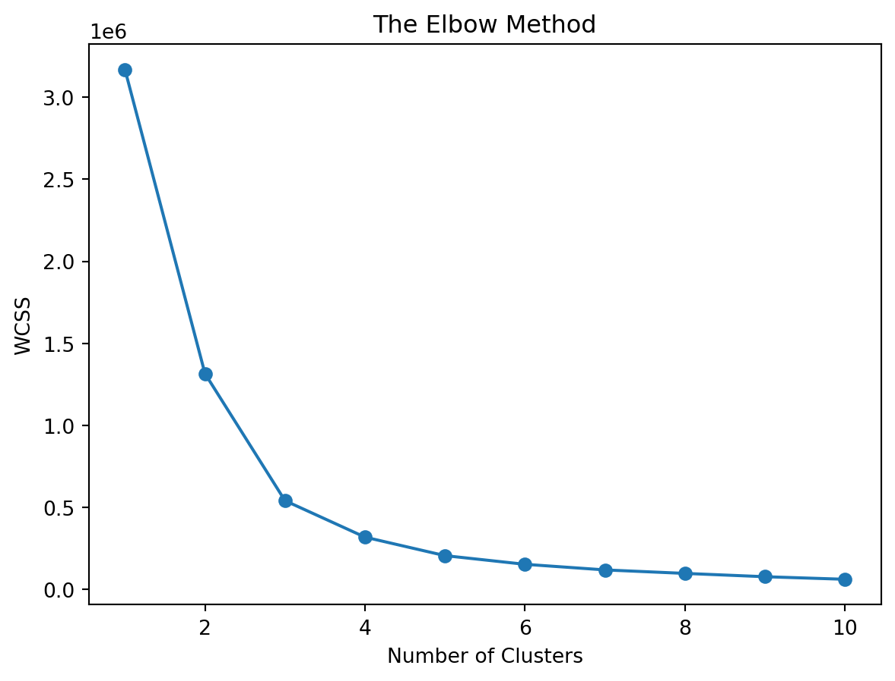
num_clusters = 4
clusterer = KMeans(n_clusters=num_clusters, random_state=10)
cluster_labels = clusterer.fit_predict(X)
print("Cluster Labels:")
print(cluster_labels)
df['Cluster'] = cluster_labels
print("Data with Cluster Labels:")
print(df[['Name', 'Year', 'Episodes', 'Rating', 'Cluster']])Cluster Labels:
[0 0 0 0 0 0 0 0 1 0 0 0 0 0 0 0 1 0 0 1 0 0 1 0 1 0 1 0 0 0 0 0 0 0 0 0 1
0 1 0 0 0 0 0 0 0 3 0 0 3 0 0 0 1 1 0 0 1 0 1 1 0 0 0 0 0 0 2 0 0 3 0 0 3
0 3 0 0 0 0 0 0 0 0 0 0 0 0 0 0 1 2 0 1 0 0 1 0 0 0 0 0 1 0 0 1 0 0 0 1 0
0 3 0 0 0 1 0 0 0 0 1 0 0 3 0 1 0 1 1 3 0 0 0 0 0 0 0 0 0 3 0 0 0 1 0 1 0
0 0 1 1 0 0 0 0 0 0 0 3 0 0 0 0 0 0 0 0 0 3 0 0 1 1 0 1 0 1 0 0 0 3 0 0 0
0 0 0 0 0 0 0 0 0 0 0 1 0 0 0 0 0 0 1 0 0 0 1 1 0 0 0 0 0 0 1 0 0 0 0 0 1
0 0 0 0 3 0 0 0 1 1 0 0 0 0 1 0 0 0 3 0 1 3 0]
Data with Cluster Labels:
Name Year Episodes Rating Cluster
0 1. Breaking Bad 2008 62 9.5 0
1 2. Planet Earth II 2016 6 9.5 0
2 3. Planet Earth 2006 11 9.4 0
3 4. Band of Brothers 2001 10 9.4 0
4 5. Chernobyl 2019 5 9.4 0
.. ... ... ... ... ...
240 241. Gintama 2005 375 8.7 3
241 242. Queer Eye 2018 60 8.5 0
242 243. The Angry Video Game Nerd 2004 225 8.5 1
243 244. Alfred Hitchcock Presents 1955 268 8.5 3
244 245. The Night Of 2016 8 8.4 0
[245 rows x 5 columns]C:\Users\user\AppData\Local\Programs\Python\Python311\Lib\site-packages\sklearn\cluster\_kmeans.py:1412: FutureWarning:
The default value of `n_init` will change from 10 to 'auto' in 1.4. Set the value of `n_init` explicitly to suppress the warning
from sklearn.metrics import silhouette_samples, silhouette_score
import matplotlib.cm as cm
range_n_clusters = [2, 3, 4, 5, 6]
for n_clusters in range_n_clusters:
fig, (ax1, ax2) = plt.subplots(1, 2)
ax1.set_xlim([-0.1, 1])
ax1.set_ylim([0, len(X) + (n_clusters + 1) * 10])
clusterer = KMeans(n_clusters=n_clusters, random_state=10)
cluster_labels = clusterer.fit_predict(X)
silhouette_avg = silhouette_score(X, cluster_labels)
print("For n_clusters =", n_clusters,
"The average silhouette_score is :", silhouette_avg)
sample_silhouette_values = silhouette_samples(X, cluster_labels)
y_lower = 10
for i in range(n_clusters):
ith_cluster_silhouette_values = \
sample_silhouette_values[cluster_labels == i]
ith_cluster_silhouette_values.sort()
size_cluster_i = ith_cluster_silhouette_values.shape[0]
y_upper = y_lower + size_cluster_i
color = cm.nipy_spectral(float(i) / n_clusters)
ax1.fill_betweenx(np.arange(y_lower, y_upper),
0, ith_cluster_silhouette_values,
facecolor=color, edgecolor=color, alpha=0.7)
ax1.text(-0.05, y_lower + 0.5 * size_cluster_i, str(i))
y_lower = y_upper + 10
ax1.set_title("The silhouette plot ")
ax1.set_xlabel("The silhouette coefficient values")
ax1.set_ylabel("Cluster label")
ax1.axvline(x=silhouette_avg, color="red", linestyle="--")
ax1.set_yticks([])
ax1.set_xticks([-0.1, 0, 0.2, 0.4, 0.6, 0.8, 1])
colors = cm.nipy_spectral(cluster_labels.astype(float) / n_clusters)
ax2.scatter(X.iloc[:, 0], X.iloc[:, 1], marker='.', s=30, lw=0, alpha=0.7,
c=colors, edgecolor='k')
centers = clusterer.cluster_centers_
ax2.scatter(centers[:, 0], centers[:, 1], marker='o',
c="white", alpha=1, s=200, edgecolor='k')
for i, c in enumerate(centers):
ax2.scatter(c[0], c[1], marker='$%d$' % i, alpha=1,
s=50, edgecolor='k')
ax2.set_title("The visualization of the clustered data.")
ax2.set_xlabel("Feature space for the 1st feature")
ax2.set_ylabel("Feature space for the 2nd feature")
plt.suptitle(("Silhouette analysis for KMeans clustering on sample data "
"with n_clusters = %d" % n_clusters),
fontsize=14, fontweight='bold')
plt.show()C:\Users\user\AppData\Local\Programs\Python\Python311\Lib\site-packages\sklearn\cluster\_kmeans.py:1412: FutureWarning:
The default value of `n_init` will change from 10 to 'auto' in 1.4. Set the value of `n_init` explicitly to suppress the warning
C:\Users\user\AppData\Local\Programs\Python\Python311\Lib\site-packages\sklearn\cluster\_kmeans.py:1412: FutureWarning:
The default value of `n_init` will change from 10 to 'auto' in 1.4. Set the value of `n_init` explicitly to suppress the warning
C:\Users\user\AppData\Local\Programs\Python\Python311\Lib\site-packages\sklearn\cluster\_kmeans.py:1412: FutureWarning:
The default value of `n_init` will change from 10 to 'auto' in 1.4. Set the value of `n_init` explicitly to suppress the warning
C:\Users\user\AppData\Local\Programs\Python\Python311\Lib\site-packages\sklearn\cluster\_kmeans.py:1412: FutureWarning:
The default value of `n_init` will change from 10 to 'auto' in 1.4. Set the value of `n_init` explicitly to suppress the warning
C:\Users\user\AppData\Local\Programs\Python\Python311\Lib\site-packages\sklearn\cluster\_kmeans.py:1412: FutureWarning:
The default value of `n_init` will change from 10 to 'auto' in 1.4. Set the value of `n_init` explicitly to suppress the warning
For n_clusters = 2 The average silhouette_score is : 0.7841282051476728
For n_clusters = 3 The average silhouette_score is : 0.7443994662641097
For n_clusters = 4 The average silhouette_score is : 0.6346534773168201
For n_clusters = 5 The average silhouette_score is : 0.5596258728689598
For n_clusters = 6 The average silhouette_score is : 0.5557296368153766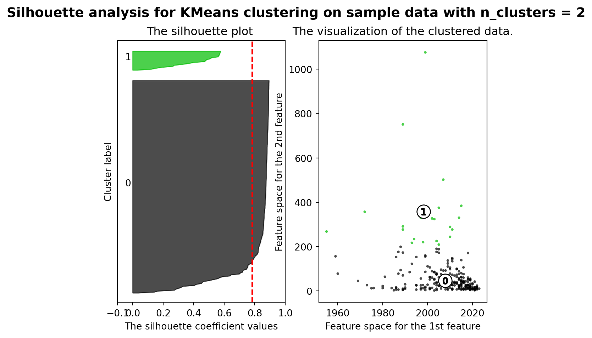
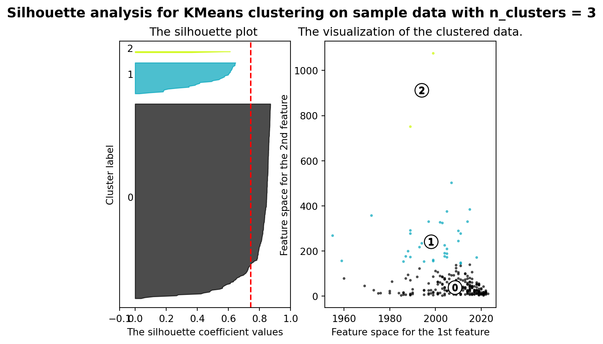
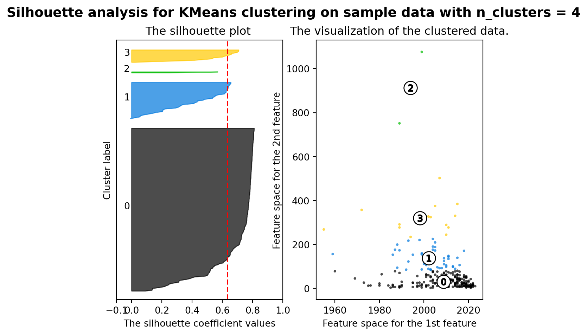
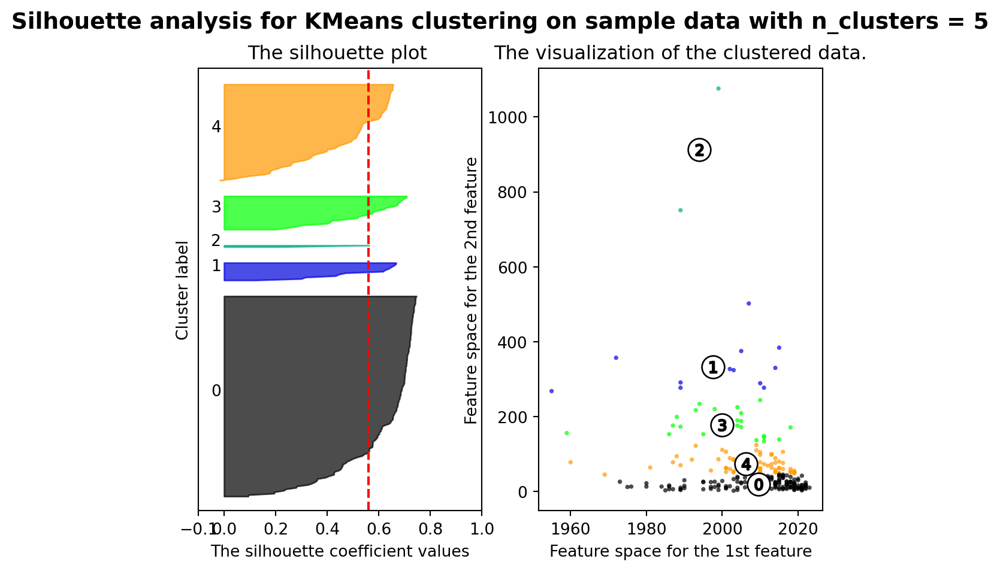
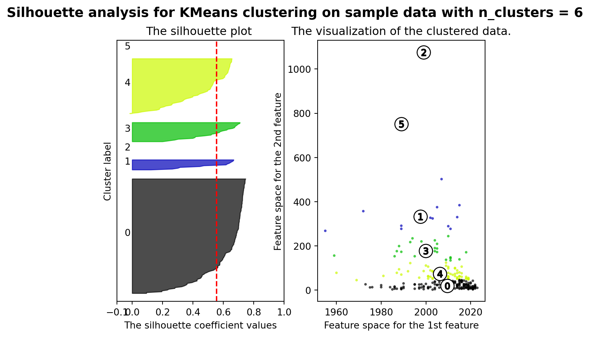